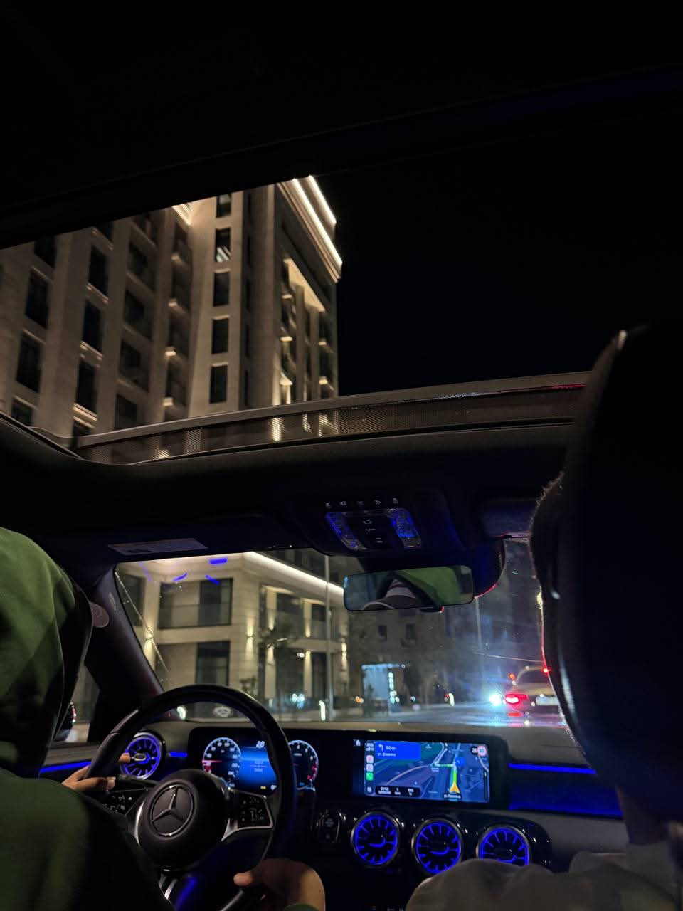
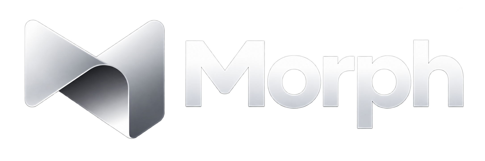
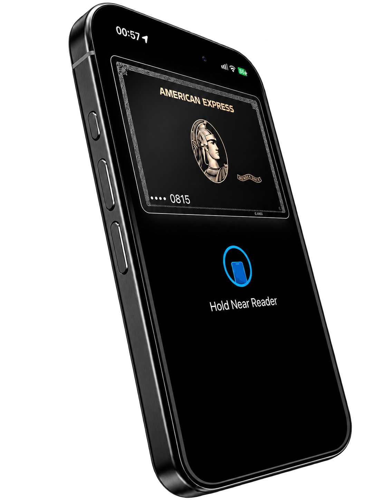

Digitaldesigner
- Сайты с нуля
- Редизайн · UX · Анимации
- @evilgarcon

XC / AFTER HOURSdesigned to be felt
xcuse / independent designer
Selected project · 01

Персонализация карт
в Apple Wallet.

Let’s create something
Есть идея или сайт, который хочется изменить? Расскажи о задаче. Обсудим визуальное направление, объём, сроки и стоимость — и начнём новую главу.
Обсуждаем твой проект, аудиторию и задачу сайта. Находим главное, что нужно донести.
Собираем структуру и визуальное направление. Согласуем объём, сроки и стоимость.
Создаём дизайн, адаптируем под разные экраны и готовим сайт к публикации.
FAQ
Создаю сайты с нуля и делаю редизайн существующих: от структуры и визуального направления до адаптивной реализации. Формат подбираем под твою задачу.
Зависит от объёма, количества страниц и функциональности. Напиши в Telegram: обсудим задачу и согласуем сроки и стоимость до начала работы.
Расскажи, чем занимаешься и что должен делать сайт. Если есть текущий сайт, тексты или референсы — присылай. Начать можно и с одной идеи.